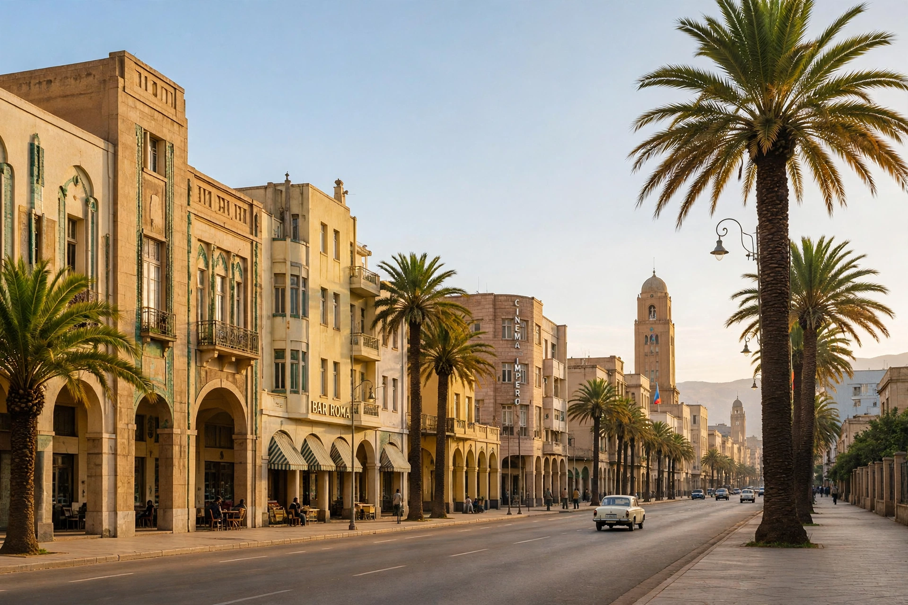

| State of Eritrea | |
|---|---|
| Capital | Asmara |
| Official languages | None de jure; Tigrinya, Arabic and English widely used |
| Government | Unitary one-party presidential republic |
| President | Isaias Afwerki (since 1993) |
| Independence | From Ethiopia: de facto 24 May 1991; de jure 24 May 1993 |
| Area | 117,600 km² (45,400 sq mi) |
| Population | ~3.5–6 million (estimates vary; no recent census) |
| Currency | Nakfa (ERN) |

Eritrea, officially the State of Eritrea, is a country in the Horn of Africa region of Eastern Africa. It is bordered by Ethiopia to the south, Sudan to the west, and Djibouti to the southeast. The northeastern and eastern parts of Eritrea have an extensive coastline along the Red Sea, including the Dahlak Archipelago. Its capital and largest city is Asmara. Eritrea won independence from Ethiopia after a thirty-year war, confirmed by a UN-supervised referendum in 1993, but has since been governed as a one-party state under President Isaias Afwerki and the People's Front for Democracy and Justice, with national elections never held.
The Eritrean highlands were part of the ancient Kingdom of Aksum, and the port of Adulis linked the region to trade with Rome, Arabia and India. The area takes its name from the Greek Erythra Thalassa ("Red Sea"). Italy assembled the colony of Eritrea in 1890 — Italy's first — and developed Asmara with the modernist architecture now recognised by UNESCO. After Italy's defeat in the Second World War, Eritrea was federated with Ethiopia under UN auspices in 1952; Ethiopia's annexation in 1962 sparked the Eritrean War of Independence (1961–1991), led first by the ELF and then by the EPLF, which liberated the country in 1991. A 1998–2000 border war with Ethiopia killed an estimated 70,000–100,000 people and poisoned relations for two decades, until a peace declaration in 2018 earned Ethiopian prime minister Abiy Ahmed the Nobel Peace Prize. Eritrea later intervened alongside Ethiopia in the Tigray War (2020–2022), drawing sanctions and international condemnation.
Eritrea's terrain runs from the cool central highlands (around Asmara at 2,325 m) down steep escarpments to the Danakil Depression — among the hottest and lowest places on Earth — and the arid Red Sea coastal plain. Major ethnic groups include the Tigrinya (about half the population), Tigre, Saho, Afar, Bilen, Kunama, Nara, Rashaida and Hidareb peoples; religious affiliation is split roughly between Christians (mainly the Eritrean Orthodox Tewahedo Church) and Muslims.
The 1997 constitution was never implemented; the National Assembly has not convened since 2002. Indefinite national service — officially 18 months but in practice often lasting years or decades — has been described by a UN commission of inquiry as amounting to enslavement and is the principal driver of one of the world's highest per-capita refugee outflows. Eritrea consistently ranks at or near the bottom of press-freedom indices; independent media were shut down in 2001 and have never reopened. The government rejects these characterisations, citing self-reliance and security threats.
The economy depends on rain-fed agriculture (employing most of the workforce), remittances from the diaspora, and mining — including gold at Bisha and major potash deposits near Danakil. The currency, the nakfa, is named after the town of Nakfa, the EPLF's wartime base. Eritrea's Red Sea ports, Massawa and Assab, historically served Ethiopia, which became landlocked at Eritrean independence.